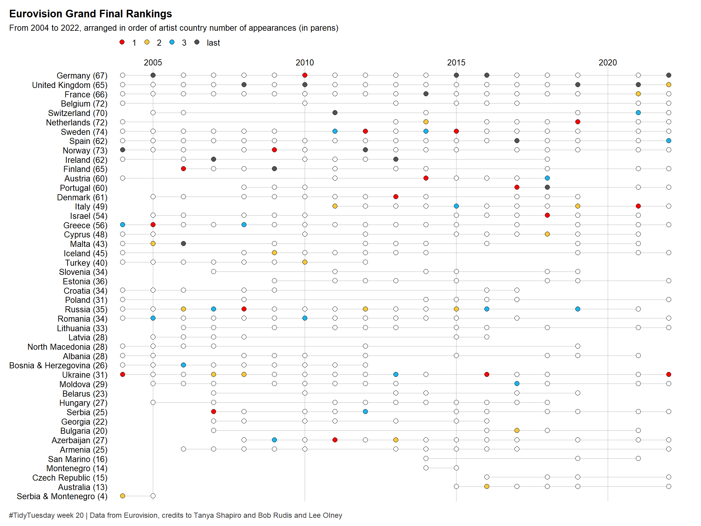

Last updated: 2022-05-17
Checks: 7 0
Knit directory: myTidyTuesday/
This reproducible R Markdown analysis was created with workflowr (version 1.7.0). The Checks tab describes the reproducibility checks that were applied when the results were created. The Past versions tab lists the development history.
Great! Since the R Markdown file has been committed to the Git repository, you know the exact version of the code that produced these results.
Great job! The global environment was empty. Objects defined in the global environment can affect the analysis in your R Markdown file in unknown ways. For reproduciblity it’s best to always run the code in an empty environment.
The command set.seed(20210907) was run prior to running
the code in the R Markdown file. Setting a seed ensures that any results
that rely on randomness, e.g. subsampling or permutations, are
reproducible.
Great job! Recording the operating system, R version, and package versions is critical for reproducibility.
Nice! There were no cached chunks for this analysis, so you can be confident that you successfully produced the results during this run.
Great job! Using relative paths to the files within your workflowr project makes it easier to run your code on other machines.
Great! You are using Git for version control. Tracking code development and connecting the code version to the results is critical for reproducibility.
The results in this page were generated with repository version 752eb71. See the Past versions tab to see a history of the changes made to the R Markdown and HTML files.
Note that you need to be careful to ensure that all relevant files for
the analysis have been committed to Git prior to generating the results
(you can use wflow_publish or
wflow_git_commit). workflowr only checks the R Markdown
file, but you know if there are other scripts or data files that it
depends on. Below is the status of the Git repository when the results
were generated:
Ignored files:
Ignored: .Rhistory
Ignored: .Rproj.user/
Ignored: analysis/figure/
Ignored: data/.Rhistory
Ignored: data/CNHI_Excel_Chart.xlsx
Ignored: data/Chicago.rds
Ignored: data/CommunityTreemap.jpeg
Ignored: data/Community_Roles.jpeg
Ignored: data/SeriesReport-20220414171148_6c3b18.xlsx
Ignored: data/Weekly_Chicago_IL_Regular_Reformulated_Retail_Gasoline_Prices.csv
Ignored: data/YammerDigitalDataScienceMembership.xlsx
Ignored: data/YammerMemberPage.rds
Ignored: data/YammerMembers.rds
Ignored: data/df.rds
Ignored: data/grainstocks.rds
Ignored: data/hike_data.rds
Ignored: data/mfg_shap.rds
Ignored: data/netflixTitles2.rds
Ignored: data/raw_weather.RData
Ignored: data/sample_submission.csv
Ignored: data/test.csv
Ignored: data/train.csv
Ignored: data/us_states.rds
Ignored: data/us_states_hexgrid.geojson
Ignored: data/weatherstats_toronto_daily.csv
Ignored: data/xgboost_fit.rds
Untracked files:
Untracked: analysis/2022_May_tabular_playground.Rmd
Untracked: code/YammerReach.R
Untracked: code/chicago.R
Untracked: code/googleCompute.R
Untracked: code/work list batch targets.R
Untracked: environment.yml
Untracked: report.html
Unstaged changes:
Modified: .gitattributes
Deleted: analysis/2022_02_11_tabular_playground.Rmd
Deleted: analysis/2022_04_18.qmd
Modified: code/_common.R
Note that any generated files, e.g. HTML, png, CSS, etc., are not included in this status report because it is ok for generated content to have uncommitted changes.
These are the previous versions of the repository in which changes were
made to the R Markdown (analysis/2022_05_17.Rmd) and HTML
(docs/2022_05_17.html) files. If you’ve configured a remote
Git repository (see ?wflow_git_remote), click on the
hyperlinks in the table below to view the files as they were in that
past version.
| File | Version | Author | Date | Message |
|---|---|---|---|---|
| Rmd | 752eb71 | opus1993 | 2022-05-17 | initial commit of Eurovision |
For #TidyTuesday 2022 week 20, Bob Rudis and Tanya Shapiro built a nice sample dataset of Eurovision grand finale rankings from 2004 to 2022.
I am going to attempt to build on Lee Olney’s submission to twitter. Reference https://github.com/leeolney3/TidyTuesday/blob/main/2022/week_20/
#TidyTuesday week 20, Eurovision grand finale rankings from 2004 to 2022. Data from Eurovision, credits to Tanya Shapiro and Bob Rudis.#rstats code: https://t.co/TJNXMGcXg2 pic.twitter.com/xdw1M8bTnx
— Lee Olney (@leeolney3) May 17, 2022
First, let’s load the packages:
suppressPackageStartupMessages({
library(tidyverse)
library(cowplot)
})Second, let’s load the data and a helper function to glue the counts of countries onto the country labels:
withfreq <- function(string, width = 20) {
dplyr::pull(
dplyr::mutate(
dplyr::add_count(tibble::tibble(string), string),
string = glue::glue("{ stringr::str_wrap(string, width = width) } ({ n })")
),
string
)
}
eurovision <- tidytuesdayR::tt_load("2022-05-17")$eurovision |> mutate(artist_country = withfreq(artist_country))--- Compiling #TidyTuesday Information for 2022-05-17 ------- There are 2 files available ------ Starting Download ---
Downloading file 1 of 2: `eurovision.csv`
Downloading file 2 of 2: `eurovision-votes.csv`--- Download complete ---# h/t to Priyanka Mehta @Priyank79286307 for the suggestion to order country by which countries participated most and which won the most
eurovision_by_country <- eurovision |>
filter(section == "grand-final", year != 2020) |>
group_by(year) |>
mutate(rank_label = case_when(
rank %in% c(1, 2, 3) ~ as.character(rank),
rank == max(rank) ~ "last",
TRUE ~ NA_character_
)) |>
ungroup(year) |>
mutate(
artist_country = factor(artist_country,
levels =
eurovision |>
group_by(artist_country) |>
summarise(
highest_rank = min(rank),
n = n_distinct(year),
.groups = "drop"
) |>
arrange(n, desc(highest_rank)) |>
pull(artist_country)
)
)eurovision_by_country |>
ggplot(aes(x = year, y = artist_country)) +
geom_line(size = .3, color = "grey70") +
geom_point(shape = 21, size = 2.5, fill = "white") +
geom_point(
data = eurovision_by_country |> filter(!is.na(rank_label)),
aes(fill = rank_label),
size = 2.5,
shape = 21
) +
scale_fill_manual(
values = c("#F50405", "#F7C83A", "#1CB4EB", "#4F5251"),
guide = guide_legend(order = 1)
) +
scale_x_continuous(
position = "top",
breaks = seq(2005, 2020, 5),
expand = expansion(mult = c(.02, NA))
) +
coord_cartesian(clip = "off") +
cowplot::theme_minimal_vgrid(12) +
theme(
legend.title = element_blank(),
axis.title = element_blank(),
axis.line = element_blank(),
axis.ticks.y = element_blank(),
legend.position = "top",
plot.margin = margin(.4, 1.4, .3, .4, unit = "cm"),
plot.title.position = "plot",
plot.title = element_text(size = 13),
plot.caption.position = "plot",
plot.caption = element_text(
hjust = 0,
color = "grey20",
margin = margin(t = 13),
size = 9
)
) +
labs(
title = "Eurovision Grand Final Rankings",
subtitle = "From 2004 to 2022, arranged in order of artist country number of appearances (in parens)",
caption = "#TidyTuesday week 20 | Data from Eurovision, credits to Tanya Shapiro and Bob Rudis and Lee Olney"
)
Thank you to
sessionInfo()R version 4.1.3 (2022-03-10)
Platform: x86_64-w64-mingw32/x64 (64-bit)
Running under: Windows 10 x64 (build 22000)
Matrix products: default
locale:
[1] LC_COLLATE=English_United States.1252
[2] LC_CTYPE=English_United States.1252
[3] LC_MONETARY=English_United States.1252
[4] LC_NUMERIC=C
[5] LC_TIME=English_United States.1252
attached base packages:
[1] stats graphics grDevices utils datasets methods base
other attached packages:
[1] cowplot_1.1.1 forcats_0.5.1 stringr_1.4.0 dplyr_1.0.9
[5] purrr_0.3.4 readr_2.1.2 tidyr_1.2.0 tibble_3.1.7
[9] ggplot2_3.3.6 tidyverse_1.3.1 workflowr_1.7.0
loaded via a namespace (and not attached):
[1] fs_1.5.2 usethis_2.1.5 lubridate_1.8.0 bit64_4.0.5
[5] httr_1.4.3 rprojroot_2.0.3 R.cache_0.15.0 tools_4.1.3
[9] backports_1.4.1 bslib_0.3.1 utf8_1.2.2 R6_2.5.1
[13] DBI_1.1.2 colorspace_2.0-3 withr_2.5.0 tidyselect_1.1.2
[17] processx_3.5.3 bit_4.0.4 curl_4.3.2 compiler_4.1.3
[21] git2r_0.30.1 cli_3.2.0 tweetrmd_0.0.9 rvest_1.0.2
[25] xml2_1.3.3 sass_0.4.1 scales_1.2.0 callr_3.7.0
[29] digest_0.6.29 rmarkdown_2.14 R.utils_2.11.0 tidytuesdayR_1.0.2
[33] pkgconfig_2.0.3 htmltools_0.5.2 styler_1.7.0 highr_0.9
[37] dbplyr_2.1.1 fastmap_1.1.0 rlang_1.0.2 readxl_1.4.0
[41] rstudioapi_0.13 farver_2.1.0 jquerylib_0.1.4 generics_0.1.2
[45] jsonlite_1.8.0 vroom_1.5.7 R.oo_1.24.0 magrittr_2.0.3
[49] Rcpp_1.0.8.3 munsell_0.5.0 fansi_1.0.3 lifecycle_1.0.1
[53] R.methodsS3_1.8.1 stringi_1.7.6 whisker_0.4 yaml_2.3.5
[57] grid_4.1.3 parallel_4.1.3 promises_1.2.0.1 crayon_1.5.1
[61] haven_2.5.0 hms_1.1.1 knitr_1.39 ps_1.7.0
[65] pillar_1.7.0 reprex_2.0.1 glue_1.6.2 evaluate_0.15
[69] getPass_0.2-2 modelr_0.1.8 vctrs_0.4.1 tzdb_0.3.0
[73] httpuv_1.6.5 selectr_0.4-2 cellranger_1.1.0 gtable_0.3.0
[77] rematch2_2.1.2 assertthat_0.2.1 xfun_0.31 broom_0.8.0
[81] later_1.3.0 ellipsis_0.3.2